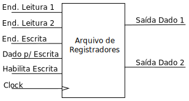

Solução:

Vimos que um processador executa as instruções através de cinco passos:
Busca da instrução;
Decodificação da instrução;
Leitura dos operandos;
Execução da operação;
Escrita do resultado.
Etapas de Execução
Esta etapa é a mesma para todas as instruções executadas.
O processador deverá definir o endereço da instrução a ser lida da memória de instruções:
Incrementando o contador de programa (PC) para a próxima posição da memória:
Alterando o conteúdo do contador de programa como consequência de uma instrução de desvio:
Atualizado o PC, ele será usado para endereçar a memória de instruções e o conteúdo dessa posição de memória deverá ser guardado para uso das próximas etapas.
O resultado da análise do funcionamento dessa etapa permite concluir que:
se (desvio)
PC = Novo Valor do PC (calculado pela instrução anterior)
senão
PC = PC + Constante
fim seO conteúdo do PC deve endereçar a memória de instruções, que chamaremos de MEM.
O conteúdo endereçado deve ser armazenado dentro do processador (normalmente em um registrador chamado registrador de instrução (RI)).
RI = MEM[PC]Lembrando da divisão entre Unidade de Controle e Fluxo de Dados, notamos que o FD recebe sinais de controle provenientes da UC. Chamaremos cada sinal de ponto de controle.
Unidade de Controle e Fluxo de Dados
Pelas conclusões anteriores, teremos que usar os seguintes componentes:
Um registrador para o PC;
Um multiplexador para executar a seleção do valor para o PC:
Um ponto de controle para fazer a seleção desse Mux;
Duas entradas, uma proveniente do PC incrementado e a outra do cálculo do endereço de desvio.
Um somador para obter o PC com o incremento para a próxima instrução;
A memória de instruções.
| PC | MUX | SOMADOR | ROM | |
|---|---|---|---|---|
Esboço da Etapa de Busca
Faça a conexão dos componentes para obter a etapa de busca da instrução.
Solução:
Etapa de Busca da Instrução
Como a etapa anterior, esta etapa tem o mesmo funcionamento independentemente da instrução sendo executada.
Esta etapa é basicamente a interpretação dos campos da instrução.
Campos da Instrução
A instrução que está na saída da memória de instruções deverá "alimentar" o endereçamento e a unidade de controle:
A UC recebe o campo de bits referentes ao opcode da instrução sendo executada:
E ativa todos pontos de controle para que a instrução funcione;
O que pode ser descrito como: UC ← RI[opcode].
O endereçamento recebe o(s) campo(s) de bits referente aos endereços utilizados:
Essa ligação depende da arquitetura escolhida, principalmente a quantidade de operandos (argumentos);
Pode ser decrito como:
BancoRegAdd ← RI[Reg X bits];
MEMAddr ← RI[MemBits];
Os dados referentes ao endereçamento executado devem alimentar a próxima etapa;
Considerando que temos dois argumentos, um vindo de um registrador e o outro da memória, podemos decrever como:
ARG_1 ← REG[RI[Reg X bits]];
ARG_2 ← MEM[RI[MemBits]];
De acordo com a arquitetura escolhida, utilizaremos:
Um registrador;
Um banco de registradores;
A memória RAM do sistema.
| Registrador | Banco de Registradores | RAM |
|---|---|---|
|  |
Como estamos trabalhando com um processador que executa uma instrução por ciclo de clock, podemos omitir o registrador de instrução e considerar a sua função como sendo executada pela memória de instruções.
Faça o esboço do circuito para a arquitetura registrador-memória considerando as definições abaixo:
Processador com 32 instruções, 8 registradores e endereçamento de 2048 posições de memória;
Palavra de dados de 8 bits.
Arquitetura Registrador-Memória
| opcode | Registrador | Endereço |
|---|---|---|
| X bits | Y bits | Z bits |
| MSB (X+Y+Z-1) | LSB (b0) |
Solução:
| opcode | Registrador | Endereço |
|---|---|---|
| 5 bits | 3 bits | 11 bits |
| MSB (b18) | LSB (b0) |
Etapa de Decodificação da Instrução
Esta etapa depende da instrução sendo executada e da arquitetura escolhida.
Faremos a implementação da instrução de soma com a arquitetura utilizada no exemplo anterior (registrador-memória).
Solução:
Esta etapa depende da instrução sendo executada.
Como ela ficaria para o exemplo que estamos usando (registrador-memória)?
Agora que já possui todas as etapas, faça um esboço do circuito completo, interligando essas etapas e acertando possíveis incoerências.
Referências:
Página com links de referências sobre VHDL, Quartus, etc ...
Ir para o início do documento.